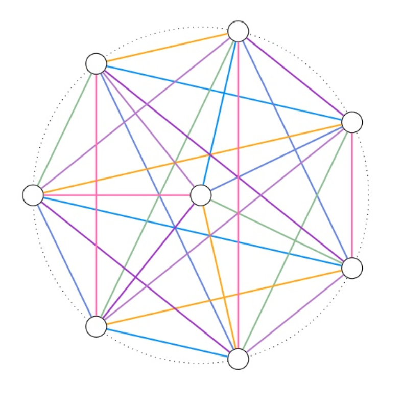

 Visualizing Baranyai’s theorem for the case when n=2.
Neeldhara Misra
Smt. Amba and Sri. V S Sastry Chair Associate Professor
Computer Science and Engineering at IIT Gandhinagar
(she/her)
Blog ⸱ Mastodon ⸱ DBLP ⸱ Contact
My broad research interests include — in no particular order: algorithm design, computational social choice, combinatorial games. You can find out more about my work here.
Recent PCs: FUN 2022, MFCS 2022, IPEC 2022, Compute 2022, CALDAM 2023, IPEC 2023 (co-chair with Magnus Wahlström)
Latest News
Recieved the NASI Platinum Jubilee Young Scientist Award. Most grateful to all collaborators and mentors who make this recognition possible.
INYAS is the Young Science Academy established by Indian National Science Academy (INSA). Their work in science outreach and popularization has been wide-ranging and very inspiring over the years. It is wonderful and humbling to have been selected as a member this year. Looking forward to pitching in!

We recently concluded the CSEd Workshop with support from ACM India, NPTEL, and the discipline of CSE at IIT Gandhinagar. The workshop featured talks by Sonia Garcha, Viraj Kumar, Venkatesh Choppella, and N S Kumar. The talks covered various themes, including CSPathshala, refute questions, mapcode, and key takeaways to convey in a data structures course.
The materials from the course (including video recordings and slides) can be accessed from here.
Mount Carmel College (in Bangalore), my alma mater, is celebrating its Platinum Jubilee this year. A part of this celebration is HERSTORY: "75 years of scripting success stories of Confident, Competent, & Compassionate Carmelites".
I was honored to be among the 75 Carmelites invited for the HERSTORY event today. It was very nostalgic to be back on campus, and the organizers put together an impeccable event that made all of us feel very special. It was humbling to be in inspiring company. I can't thank MCC enough for providing an empowering and fun environment at a crucial stage of my life!
We recently concluded the GIAN course on Randomized Methods for Parameterized Algorithms by Daniel Lokshtanov, Professor, Dept of Computer Science, University of California Santa Barbara, between Dec 5—9, 2022. The course consisted of over ten hours of lectures covering modern techniques in randomized algorithms, and five interactive tutorial sessions.
The materials from the course (including video recordings and slides) can be accessed from here.
My course on Getting Started with Competitive Programming will run from 23 Jan 2023 to 14 Apr 2023. The deadline to register is 30th January 2023. I hope you have a chance to check it out if it is of interest to you!
(More generally, the NPTEL Jan 2023 semester is open with courses across engineering, humanities and social sciences. You can enrol in these courses at no cost here and get a certification by taking up a proctored exam for a nominal fee of Rs 1,000 per course.)
Joint work with Manas Mulpuri, Prafullkumar Tale, and Gaurav Viramgami ⸱ To Appear at FSTTCS 2022 ⸱ Preprint available from ArXiV
The game of rendezvous with adversaries is a game on a graph played by two players: Facilitator and Divider. Facilitator has two agents and Divider has a team of k agents. While the initial positions of Facilitator’s agents are fixed, Divider gets to select the initial positions of his agents. Then, they take turns to move their agents to adjacent vertices (or stay put) with Facilitator’s goal to bring both her agents at same vertex and Divider’s goal to prevent it. The computational question of interest is to determine if Facilitator has a winning strategy against Divider with k agents. In this work, we prove that this problem is hard even when the graph is very close to a forest.
No matching items
All News
In case you care for (sporadic) updates by email.
I mostly plan to write some notes to self: I can’t imagine that you’d be interested, but if, for some reason, you are, you are welcome.